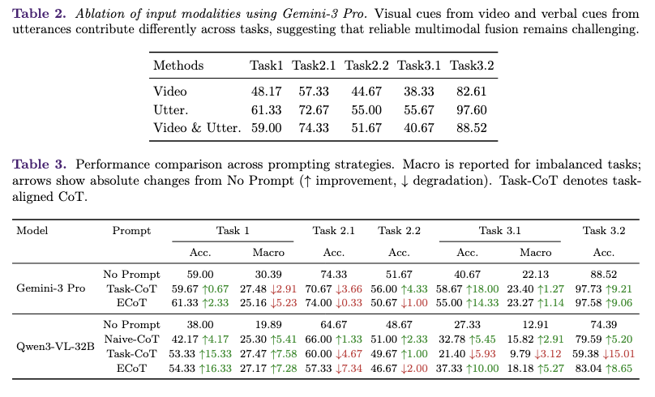
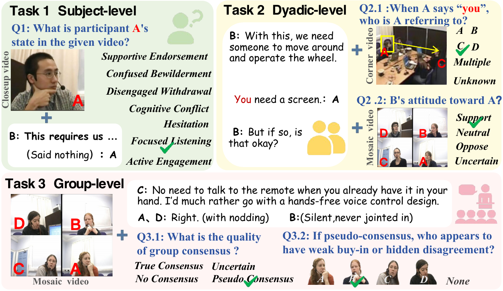
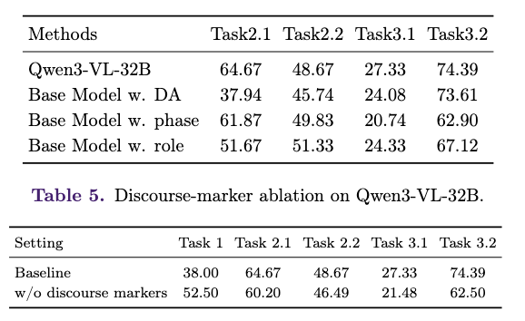

MeetingToM
Evaluating Multimodal LLMs on
Theory-of-Mind Reasoning in Multi-Party Meetings
1 College of AI, Tsinghua University
2 Department of Biostatistics and Bioinformatics, Duke University
* Equal contribution † Corresponding author
01
Benchmark hierarchy
Subject-level, dyadic-level, and group-level Theory-of-Mind reasoning in multi-party meetings.

02
Benchmark overview
MeetingToM evaluates Theory-of-Mind reasoning in multi-party meetings. This section highlights the task structure and a representative example.
Scroll →

03
Citation
The publication venue and final citation will be updated with the paper release.
@misc{wang2026meetingtom,
title = {MeetingToM: Evaluating Multimodal LLMs on Theory-of-Mind Reasoning in Multi-Party Meetings},
author = {Wang, Ziyi and Wu, Yuhang and Piao, Dongxu and Liu, Xingyu and Zhou, Tianhui and Liu, Miao},
year = {2026},
note = {Preprint}
}
04
Acknowledgements
MeetingToM is built upon the AMI Meeting Corpus . Original meeting recordings and source materials should be obtained from the official AMI Corpus website.
Additional acknowledgements and funding information will be added with the paper release.